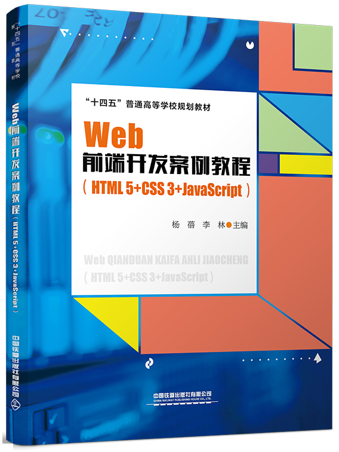

首页 > 书籍下载
《Web前端开发案例教程（HTML5+CSS3+JavaScript）》PDF下载（高清完整版）
|  | 作者：杨蓓、李林 |
| 出版时间：2021年07月01日 | |
| 出版社：中国铁道出版社 | |
| ISBN：9787113275549 | |
| 总页数：268 |
这是一本面向 Web 前端开发实际应用的书，以案例为驱动，使读者更利于理解和掌握，以便快速达到学习目标。
这里提供的是《Web前端开发案例教程（HTML5+CSS3+JavaScript）》的高清 PDF 下载，内容完整，附带目录标签。
这本书全面系统地讲解了 Web 前端开发的核心技术，其内容包括：Web 前端设计概述、单列图文网页设计、层叠样式表 CSS、网页的布局设计、JavaScript 语言基础、BOM 与 DOM 、HTML5 进阶、应用 CSS3 渲染效果，共8章内容。作为一名有经验的 Web 前端开发工作者，不建议初学者使用这本书，初学者还是要从基础学起，然后再来学习更深一层的开发技能。
和其它同类书籍相比，这本书的编写特点如下：
- 教材内容和组织结构新颖
- 教学案例比较典型
- 整体布局清晰
- 内容严谨，具有完整性和逻辑性
- 鲜明的思政特色
书籍目录
- 第1章 Web前端设计概述
- 1.1 万维网
- 1.2 网页与网站
- 1.3 HTML与CSS
- 1.4 Web发展历程与标准
- 1.5 Web浏览器
- 1.6 Web前端开发
- 1.7 开发工具
- 1.8 应用DW设计简单网页
- 小结
- 习题
- 第2章 单列图文网页设计
- 2.1 HTML 5标签和属性
- 2.2 HTML 5网页文档结构
- 2.3 文本网页的设计
- 2.4 图册网页的设计
- 2.5 图文网页的设计
- 2.6 表单网页的设计
- ……
- 第3章 层叠样式表CSS
- 第4章 网页的布局设计
- 第5章 JavaScript语言基础
- 第6章 BOM与DOM
- 第7章 HTML 5进阶
- 第8章 应用CSS 3渲染效果
- 参考文献
书籍下载
一键登录，免费下载完整版 PDF，文件名称：《Web前端开发案例教程（HTML5+CSS3+JavaScript）》.pdf